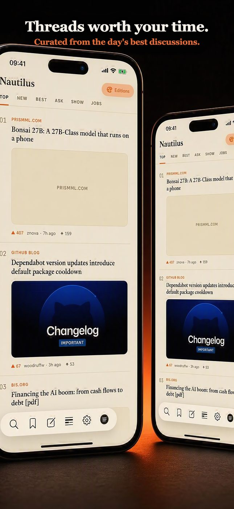
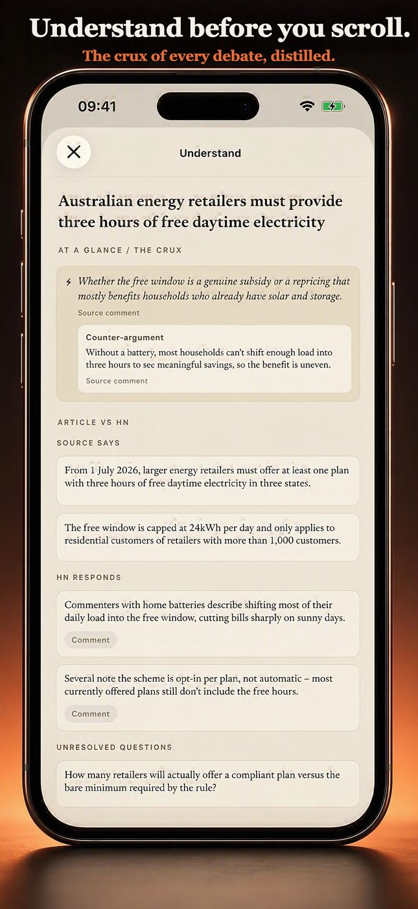
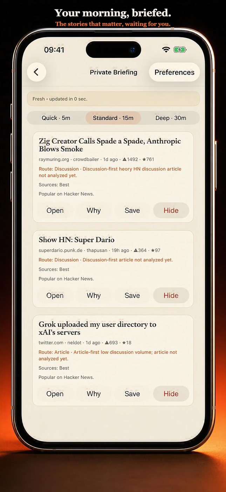
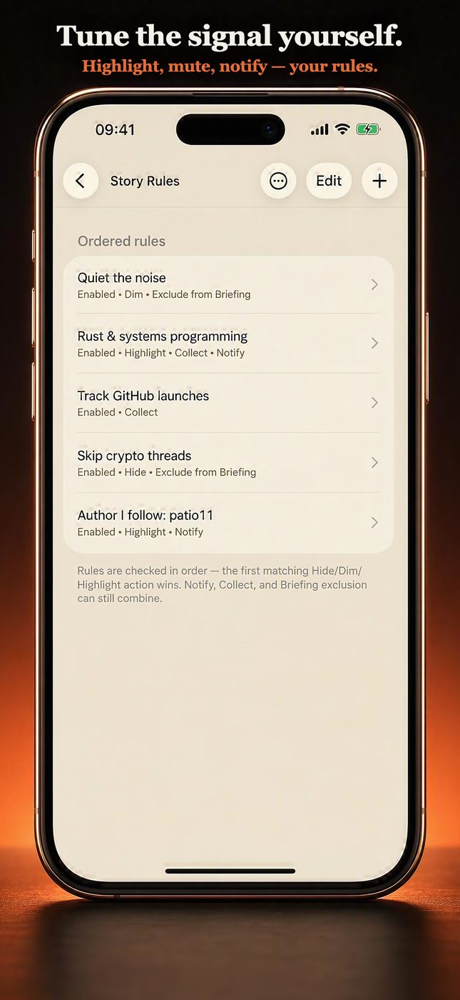
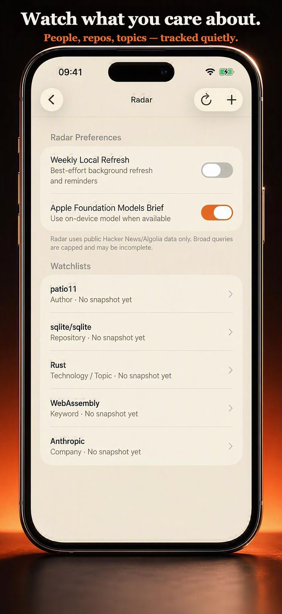
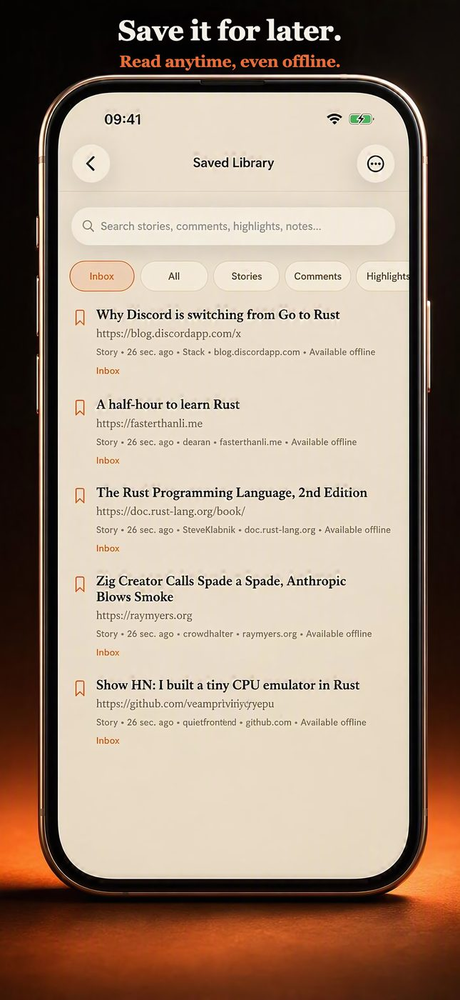
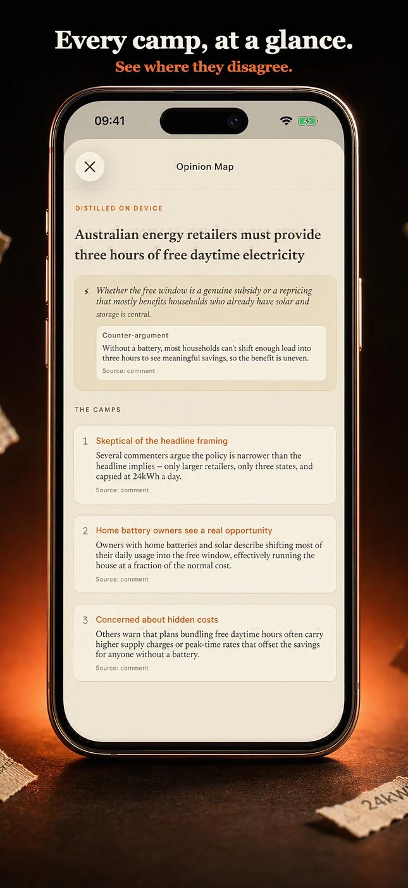

A quiet, beautiful
reading room for
Hacker News.
Nautilus is an independent native reader built around three ideas: remember what you've read, understand what matters, and give you a private research layer around the discussions you care about — all on-device, nothing uploaded.

The core reading experience — every feed, your full HN account, on-device AI, offline reading, and every research tool below — is entirely free. No ads, no tracking.
The camps, the crux, and the one comment worth reading.
Apple's on-device Foundation Models cluster a thread's arguments into agreeing and disagreeing camps, surface the crux of the debate, and cite every claim back to a real comment — distilled from the whole discussion, not just the top reply.

A reading queue built from what you actually read.
Quick (5m), Standard (15m), or Deep (30m) — Nautilus assembles a short queue from the stories you've read, saved, and followed, and refreshes it privately, on your own schedule. Built entirely on-device.

Shape your feed. See exactly why.
Hide, dim, or highlight stories automatically by keyword, domain, author, score, and more — or collect matches, get notified, or exclude them from your Briefing. Every rule shows a live test preview before you save it.

Evidence-backed watchlists, not vibes.
Track a technology, company, keyword, domain, GitHub repository, or recurring idea. Radar evaluates new stories and comments locally and surfaces matches over time — every claim cited back to its source. No reputation or karma scoring, ever.

Save it. Tag it. Read it anywhere.
Save any story or article as an offline pack, attach personal notes and tags, and search your own library — all stored on-device. Optional private iCloud sync keeps it current across your devices, using your own iCloud database.

See where a thread's camps disagree.
A visual map of the strongest arguments on each side of a debate, generated fresh from the current comment tree. Floating paper, not floating opinions — every position is traceable to who actually said it.

Still reading? You could be scrolling the real thing.
Free, forever · no ads, no trackers, no account required
The parts that don't fit in a screenshot, but you'll notice within a day of using it.
Command Palette
Full keyboard shortcuts and a searchable command palette with a hardware keyboard.
iPad Research Workspace
Expands to three panes when space allows — reading, notes, and context side by side.
Home Screen Widget
The front page, styled by your active Edition, right on your Home Screen.
Live Activities
Track a story's score and comment count on the Lock Screen and in the Dynamic Island.
Thread Explorer
Maps huge threads visually — new comments, OP replies, saved comments, and search matches at a glance.
Discussion Lineage
Traces earlier submissions and closely related prior threads, so you never miss the real conversation.
Safari Extension
Finds the Hacker News discussion for the page you're currently reading.
Spotlight & Siri
Search your library and jump back into threads system-wide.
Every screen reads from one set of design tokens. Swap the table of values and the whole app re-dresses live. Three Editions are free forever; a one-time purchase unlocks the rest of the gallery.
Native UIKit.
Private by construction.
The reading engine is a shared Rust core — HTTP, caching, parsing, and the HN/Algolia clients — compiled to a native library via UniFFI and called directly from Swift. No Electron, no WebViews for the reading surface, and no server Nautilus operates that could see what you read.
- Official HN APINautilus reads Firebase + Algolia wherever it can
- Privacy PolicyNo ads, no analytics, no server that can see what you read
- Editions Design LanguageHow the token system behind every theme works
Reading, on-device AI, offline packs, Story Rules, Radar, Private Briefing, and your own Hacker News account — every feature above is free forever. No subscriptions, anywhere.
Every feed, on-device AI, offline reading, Story Rules, Radar, Private Briefing, three Editions, your own HN account.
Unlocks the remaining five Editions forever. A single purchase, restored free across your devices. No subscription.
Nice, Generous, or Legend — a separate, optional thank-you to support development. Never required.